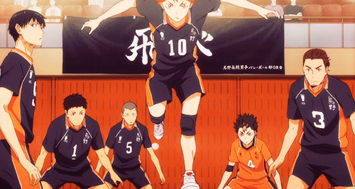

Seja bem-vindo ao portfólio Haikyuu: Karasuno
Sendo a principal equipe esportiva da obra, o colégio Karasuno tem como time o mesmo nome. No começo, antes da entrada do protagonista, Hinata e Kageyama, a escola possuía como melhor atacante um jovem intitulado de "Pequeno Gigante", devido ao seu tamanho. ele era o jogador "perfeito", juntamente aos muitos outros de sua equipe. Todavia a época deles já "passou" e, agora, a Karasuno atual não está tão forte quanto antigamente, resta para os novos integrantes levantarem a moral que o time havia conquistado na primícia de tudo. Os corvos (mascotes do time) vêm reerguendo-se após a chegada de Shōyō Hinata e Kageyama Tobio ao clube.
Jogadores:
| Nome | Posição |
|---|---|
| Daichi Sawamura #1 | Atacante/Capitão/ |
| Kooshi Sugawara #2 | Vice-Capitão/Levantador/Sacador |
| Asahi Azumane #3 | Atacante/Ace |
| Yuu Nishinoya #4 | Líbero |
| Ryuunosuke Tanaka #5 | Atacante |
| Chikara Ennoshita #6 | Atacante |
| Hisashi Kinoshita #7 | Atacante |
| Kazuhito Narita #8 | Bloqueador Central |
| Tobio Kageyama #9 | Levantador |
| Shoyo Hinata #10 | Bloquador Central |
| Kei Tsukishima #11 | Bloqueador Central |
| Tadashi Yamaguchi #12 | Bloqueador Central/Sacador |
